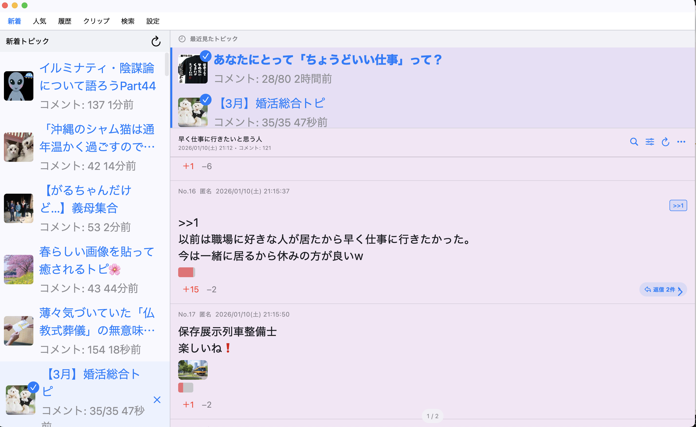
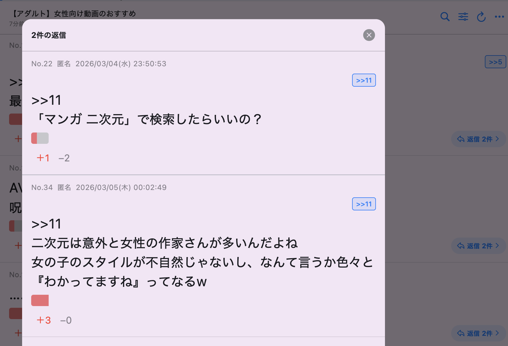
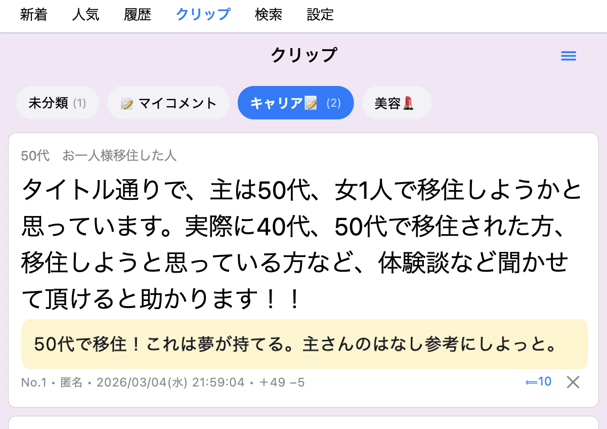

新着トピック
新着タブから、いま立ったトピックをすぐ確認。人気トピックとの切り替えもできます。
新着を追って、長いトピを快適にスクロール。途中で閉じても読んだところから再開。気になったコメントはクリップ。一度読み込んだトピなら、キャッシュがあるときは回線がなくても読み返せます。

PCで表示するだけではなく、長いトピを追い続けるための機能をまとめて載せています。
新着タブから、いま立ったトピックをすぐ確認。人気トピックとの切り替えもできます。
一度読み込んで端末にキャッシュされたトピなら、通信できないときでも読み返せます。
長文トピでも読み進めやすく。コメント番号ジャンプにも対応しています。
読んでいた位置を記録して、次に開いたときの続きを探し直す手間を減らします。
気になったコメントを保存。あとからまとめて見返せます。
キーワードや反応数でコメントを絞り込み、長いトピから読みたいところを探せます。
現在のWindows版で使える代表的な機能です。

長いトピの中でも、目的のコメントへ移動しやすく。

あとで読み返したいコメントをまとめておけます。
対応OS: Windows 10 / 11
提供元: Microsoft Store
Microsoft Storeからインストールできます。アップデートもStore経由で行われます。